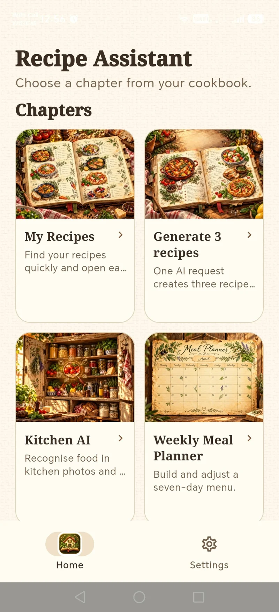

Simple by intention
Interfaces that make sense, with the tools you need and less of what you don't.
We create considered, practical software that makes everyday tasks feel simpler — from planning what's for dinner to exploring new possibilities with AI.
Vitali Automation · Independent software development
Every great application begins with an everyday problem worth solving. We focus on useful ideas and understandable experiences.
Interfaces that make sense, with the tools you need and less of what you don't.
Practical development, testing and iteration — from the first idea to the finished detail.
Smart functionality that helps rather than getting in the way.
Recipe Assistant combines a warm, familiar cookbook experience with optional AI tools that help you make more from what's already in your kitchen.
Discover Recipe Assistant ↗
Organise recipes, recognise ingredients, explore meal ideas and keep favourite dishes close at hand.
We build, test, listen and refine. Curious about the app or need help? We're easy to reach.